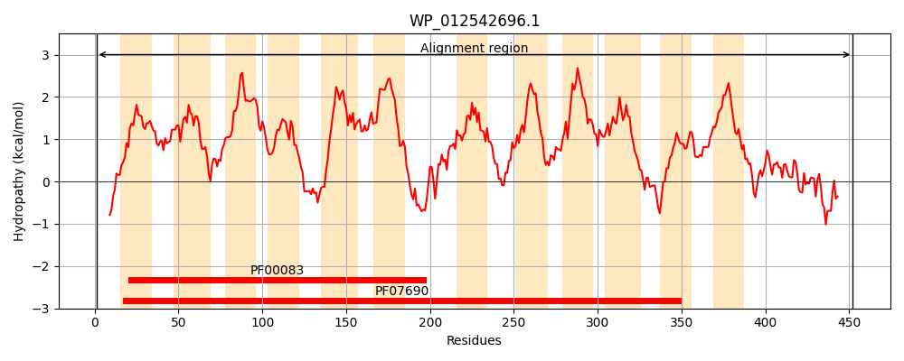
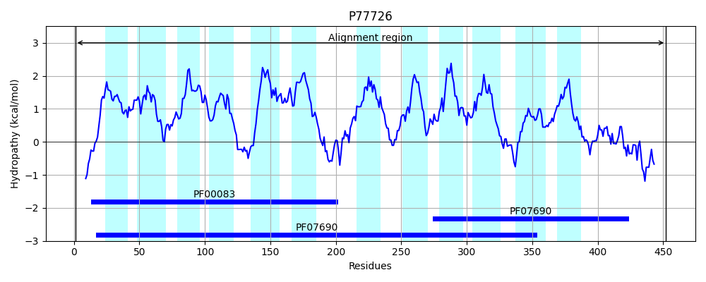
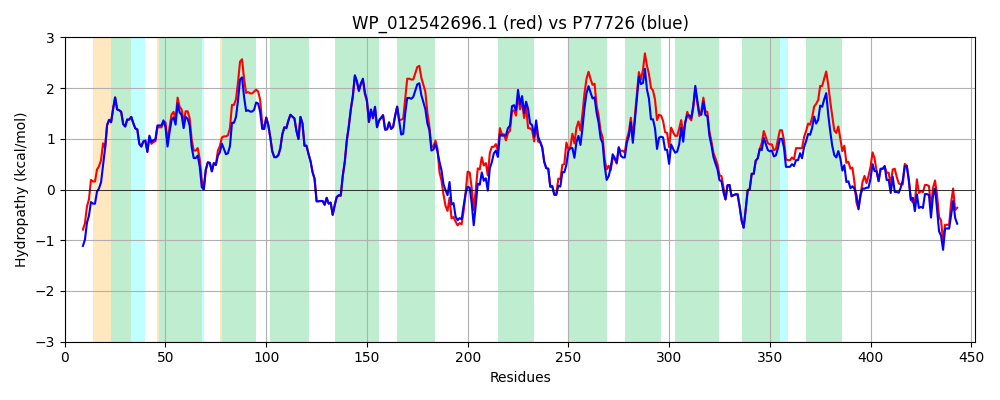

Hit Accession: P77726
Hit TCID: 2.A.1.2.60
Hit Description: gnl|BL_ORD_ID|11531 gnl|TC-DB|P77726|2.A.1.2.60 Inner membrane transport protein YajR OS=Escherichia coli (strain K12) GN=yajR PE=1 SV=2
Mach Len: 452
e:0.000000
Query TMS Count : 12
Hit TMS Count: 12
TMS-Overlap Score: 11.700000
Predicted Substrates:None
BLAST Alignment:
Score: 1923 , Bit scores: 745 bits, E-value: 0.0e+00, Alignment length: 452, Percentage identity: 82
Query: 1 MNDNKMTPGELRATWGLGTVFSLRMLGMFMVLPVLTTYGMALQGASEALIGLAIGIYGLAQAIFQIPFGLLSDRIGRKPLIVGGLLIFVLGSVIAALTDSIWGIILGRALQGSGAIAAAVMALLSDLTREQNRTKAMAFIGVSFGVTFAIAMVLGPIVTHQLGLHALFWMIAILATIGILLTLWVVPNSHNHVLNRESGMVKGCFSKVLVEPRLLKLNFGIMCLHIMLMSTFVALPGQLEAAGFPAAEHWKIYLVTMVISFISVVPFIIYAEVKRKMKRVFLLCVAILLIAEIVLWGAGGYFWELVAGVQLFFLAFNLLEALLPSLISKESPAGYKGTAMGVYSTSQFLGVAIGGALGGWVDGFFDSQTVFLLGALLAMLWLLVASTMSEPPYVSSLRVEVPDGVVVDSALQTRLLNANGVHQALVVPEERSVYIKIDSKVTNRFEIEQLIK 452
MND KMTPGE RATWGLGTVFSLRMLGMFMVLPVLTTYGMALQGASEALIG+AIGIYGL QA+FQIPFGLLSDRIGRKPLIVGGL +F GSVIAAL+DSIWGIILGRALQGSGAIAAAVMALLSDLTREQNRTKAMAFIGVSFG+TFAIAMVLGPI+TH+LGLHALFWMIAILAT GI LT+WVVPNS HVLNRESGMVKG FSKVL EPRLLKLNFGIMCLHI+LMSTFVALPGQL AGFPAAEHWK+YL TM+I+F SVVPFIIYAEVKRKMK+VF+ CV ++++AEIVLW A FW+LV GVQLFF+AFNL+EALLPSLISKESPAGYKGTAMGVYSTSQFLGVAIGG+LGGW++G FD Q VFL GA+LA +WL VASTM EPPYVSSLR+E+P + + AL+ RLL G+ + L+ EE S Y+KIDSKVTNRFEIEQ I+
Sbjct: 1 MNDYKMTPGERRATWGLGTVFSLRMLGMFMVLPVLTTYGMALQGASEALIGIAIGIYGLTQAVFQIPFGLLSDRIGRKPLIVGGLAVFAAGSVIAALSDSIWGIILGRALQGSGAIAAAVMALLSDLTREQNRTKAMAFIGVSFGITFAIAMVLGPIITHKLGLHALFWMIAILATTGIALTIWVVPNSSTHVLNRESGMVKGSFSKVLAEPRLLKLNFGIMCLHILLMSTFVALPGQLADAGFPAAEHWKVYLATMLIAFGSVVPFIIYAEVKRKMKQVFVFCVGLIVVAEIVLWNAQTQFWQLVVGVQLFFVAFNLMEALLPSLISKESPAGYKGTAMGVYSTSQFLGVAIGGSLGGWINGMFDGQGVFLAGAMLAAVWLTVASTMKEPPYVSSLRIEIPANIAANEALKVRLLETEGIKEVLIAEEEHSAYVKIDSKVTNRFEIEQAIR 452 | Protein Hydropathy Plots: |
|---|
|  |  |
Pairwise Alignment-Hydropathy Plot:
|
|---|
|  |